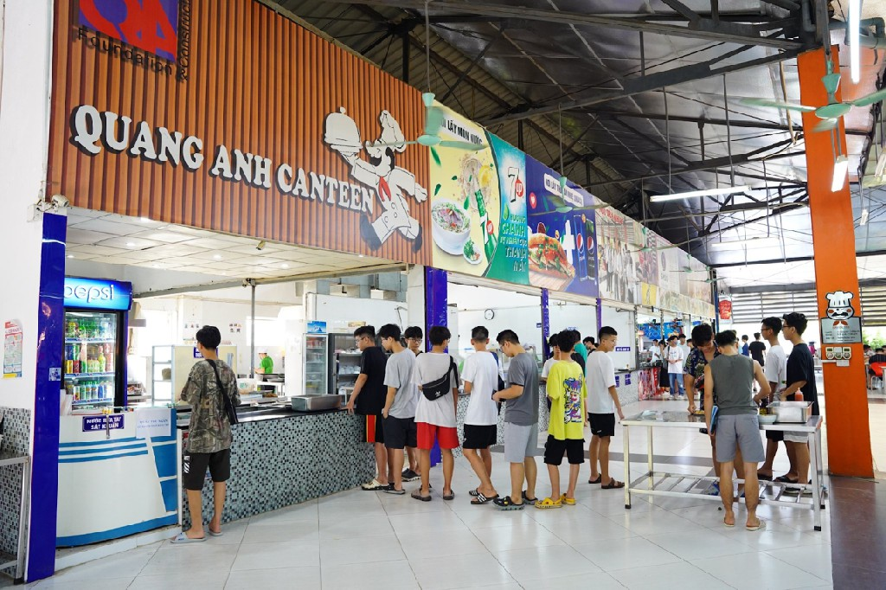
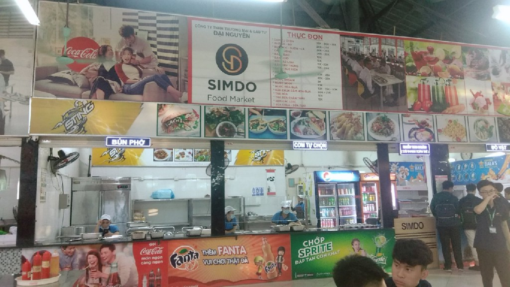
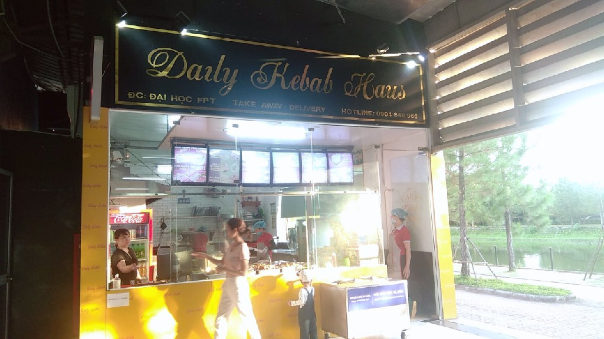
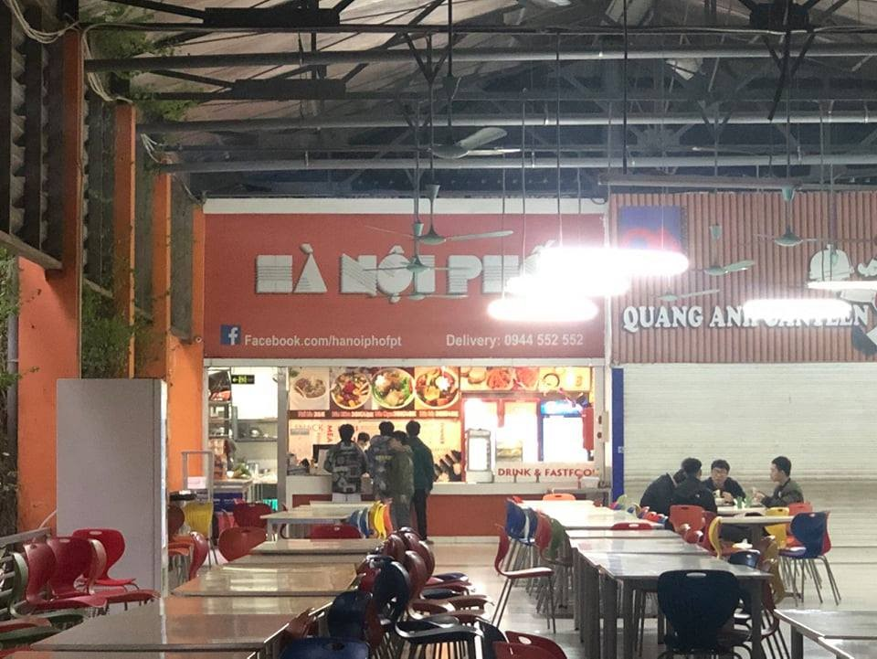
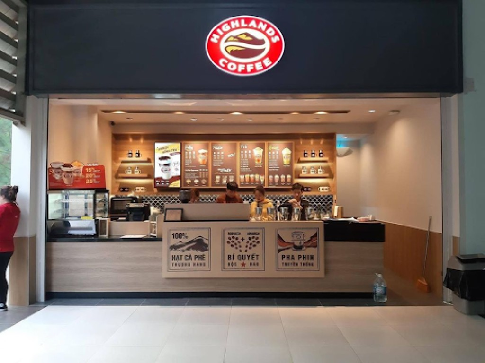
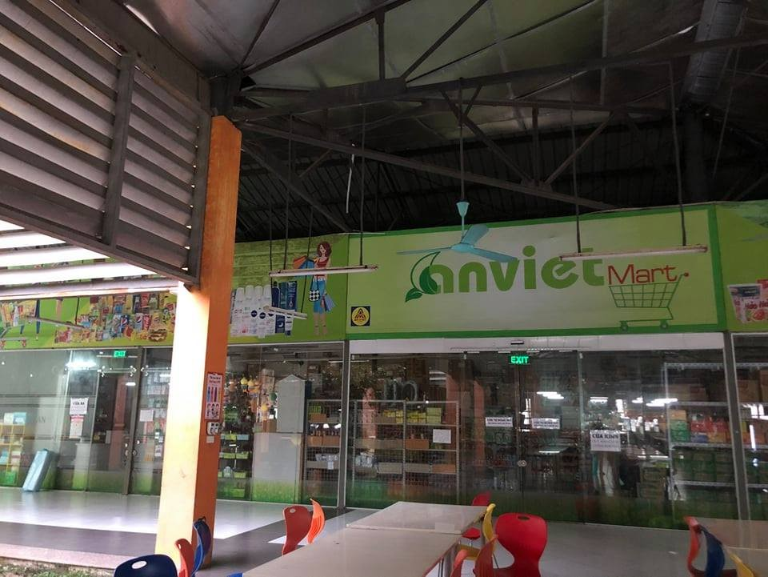
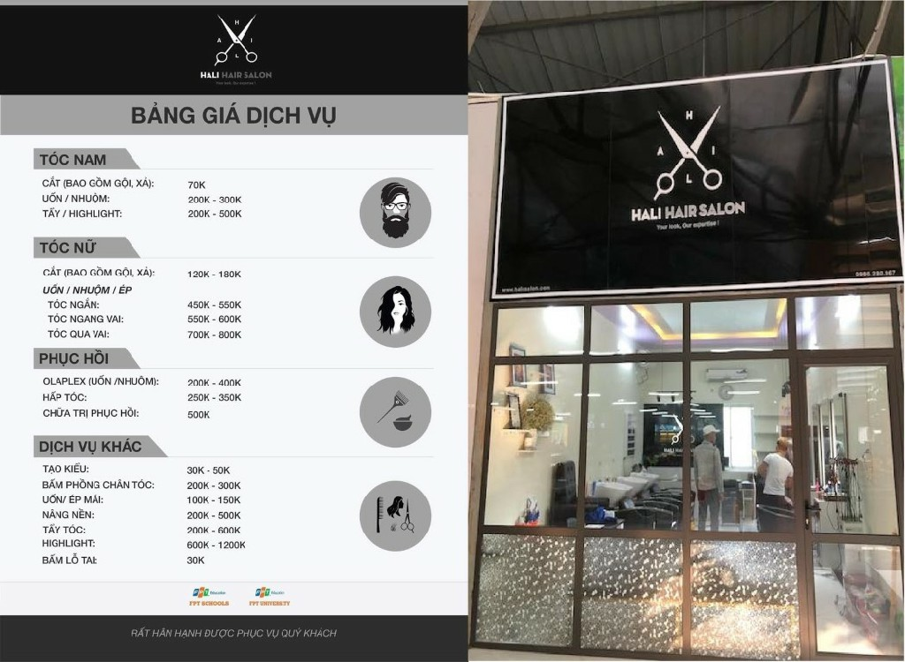
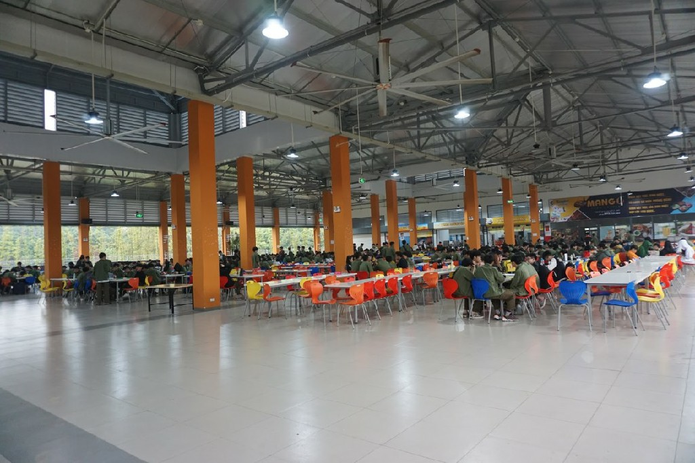
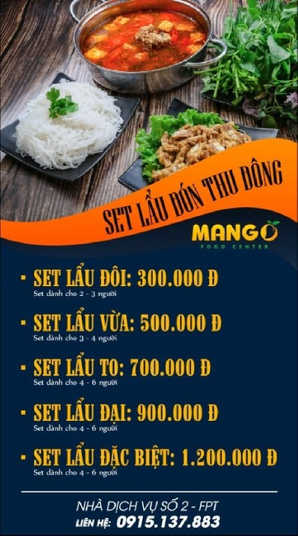

Chắc hẳn FPT là 1 trong những trường ĐH hiếm có đến 3 Canteen để phục vụ sinh viên, 3 khu có phong cách khác nhau nhưng có điểm chung là đều thu hút đông sinh viên, học sinh FSchool (THPT trực thuộc trong ĐH).
Đồ ăn ở đây rất đa dạng, tùy vào sở thích và nhu cầu mọi người có thể chọn cho mình những món ăn phù hợp nhất, đôi lúc cũng khó để đưa ra quyết định dễ dàng vì có quá nhiều thứ.
Canteen 1
Có 4 quán cơm: tất cả các quán đều phải mua phiếu ăn ở quầy thanh toán thì mới có thể lấy được đồ ăn
Quán Quang Anh
 Quán cơm Quang Anh nằm tại canteen 1.
Các món ăn: bánh mì, cơm rang, phở, bún chả, các đồ ăn nhanh, cơm theo suất (thức ăn được chọn tại chỗ lấy cơm),...
Giá: 10.000 - 30.000VNĐ.
Bởi sự phong phú trong thực đơn cùng với không gian thoáng rộng mà quán có thể thu hút được phần lớn học sinh, sinh viên nán lại để ăn trưa, ăn tối.
Quán Simdo
 Quán cơm Simdo nằm tại canteen 1.
Quán mở cả ngày (trừ T7, CN) Các món ăn: bún chả, mì tôm, bánh mì, các đồ ăn nhanh, và cơm theo suất (thức ăn được chọn tại chỗ lấy cơm),...
Giá: 10.000 - 30.000VNĐ.
Là quán có thực đơn phong phú và linh hoạt kèm với đó là sự năng nổ, nhiệt tình cùng với sự thân thiện đến từ vị trí quầy bán phiếu cơm đã lấy sự thiện cảm rất lớn từ hầu hết học sinh, sinh viên của trường.
Quán Daily Kebab Haus
 Quán cơm Daily Kebab Haus tại canteen 1.
Quán mở cả ngày (có thể mở vào cả T7, CN) Các món ăn: các món xôi, cơm rang, mì tôm, và cơm theo suất (thức ăn được chọn tại chỗ lấy cơm),...
Giá: 10.000 - 35.000VNĐ.
Tuy không gian không được như 2 quán trên nhưng nhờ vào sự phong phú và thay đổi liên tục thực đơn trong ngày nên điều này gây tò mò cho nhiều học sinh, sinh viên phải vào ăn thì mới biết được.
Quán Hà Nội Phố
 Quán cơm Hà Nội Phố tại canteen 1.
Quán mở cả ngày(có thể mở vào cả T7, CN) Các món ăn: phở bò, bún cá, bún mọc, bánh bao
Giá: 10.000 - 35.000VNĐ
Tuy không có thực đơn phong phú như 3 quán còn lại nhưng quán vẫn thu hút được mọi người vào ăn bởi sự nhiệt tình của nhân viên.
Highland Coffee
 Highland Coffee tại canteen 1.Mới mở nhưng được lòng rất nhiều sinh viên bởi danh tiếng đã có sẵn của thương hiệu quán.
Giá dao động từ 30.000 - 65.000 VNĐ.
Siêu thị An Việt
Ở đây có bán tất cả các vật dùng thiết yếu (sách vở, đồ sinh hoạt, đồ ăn nhanh...) để có thể giúp cho sinh viên ở kí túc xá không nhất thiết phải ra ngoài trường mới có thể mua sắm.
 Siêu thị An Việt tại canteen 1.Quán cắt tóc
 Quán cắt tóc Hali nằm tại canteen 1.
Hali Có tất cả các dịch vụ (cắt tóc, nhuộm tóc, gội đầu...) với giá cả hợp lý giúp cho học sinh, sinh viên có cảm giác như đang được làm tại các salon quen thuộc.
Đọc đến đây có lẽ mọi người đang cảm thấy rất bất ngờ về sự đầy đủ tiện nghi mà Canteen sở hữu, bởi vậy mà số lượng người ở đây gần như luôn ổn định.
Canteen 2
 Canteen 2 ở trường đại học FPT.Mới được hoàn thiện vào cuối năm 2020, dù ra sau nhưng cách bài trí ở đây rất sáng tạo, các setup thu hút sinh viên được thực hiện thông minh và chuyên nghiệp.
Ở Canteen 2 thì quán Mango là thầu luôn cả khu nhưng lại có đầy đủ các món từ đồ ăn thức uống, thậm chí là một phòng riêng cho những bữa tiệc lẩu của các lớp order.
Khi muốn mua đồ ăn, bạn chỉ cần mang khoảng 20.000-35.000VNĐ là có thể mua được phiếu ăn và đứng chọn món ăn cho mình để có một bữa ăn như ý.
Còn đối với một bữa lẩu, ở đây có thể đặt theo set và đây là bảng giá để các bạn có thể tham khảo:
 Set lẩu đón thu đông của quán Mango tại canteen 2.Canteen 3
 Quán cơm sao việt tại canteen
3
Quán cơm sao việt tại canteen
3
Tuy là canteen đã được mở từ lâu nhưng do nhu cầu ăn uống của học sinh, sinh viên khá là cao nên đã có nhiều sự thay đổi về nhà cơm, và Sao Việt chính là nhà cơm mới vào ngay sau khi canteen 2 được hoàn thiện. Mặc dù quán Sao Việt vào sau cùng nhưng quán vẫn thu hút đông đảo mọi người bởi sự nhiệt tình của nhân viên kèm với đó là sự phong phú trong thực đơn
Sau khi đã mua vé cơm, bạn có thể tự chọn đồ ăn tùy thích ở khu vực bày sẵn để có bữa ăn vừa ý mình. Giá mỗi suất được giao động từ 30.000-35.000VNĐ
 Quán trà sữa Hăo Chá.
Quán trà sữa Hăo Chá.
Ngoài ra, quán Sao Việt còn có một quán trà sữa Hăo Chá được bán ở ngay bên cạnh. Và chỉ cần 25.000-50.000VNĐ là mọi người có thể gọi cho mình một cốc mà mình mong muốn.
Azzan Coffee
 Quán cafe Azzan .
Quán cafe Azzan .
Được mở ngay cạnh canteen 3, có giá thành ở quán cũng khá hợp lý kết hợp với quán có không gian khá rộng, sang trọng, thoáng đãng cùng với sự yên tĩnh phù hợp để mọi người có thể vừa nhâm nhi cốc cà phê vừa học tập và làm việc.
Đăng bởi Ngọc Đức
tham khảo thông tin từ
ĐH
FPT
.